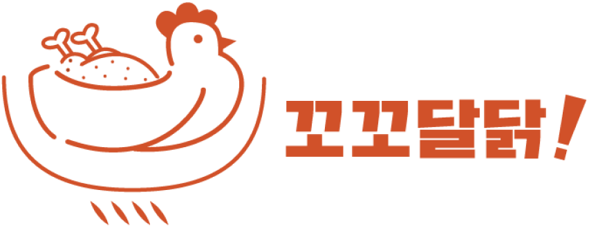
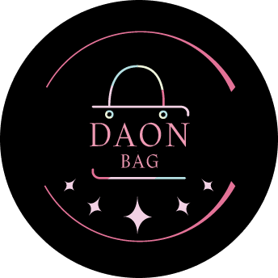
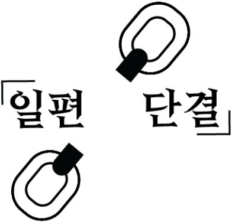
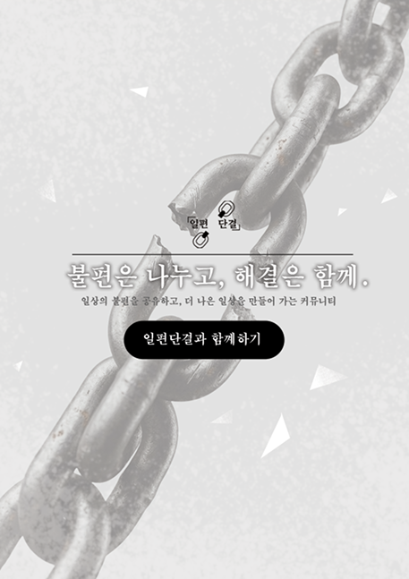
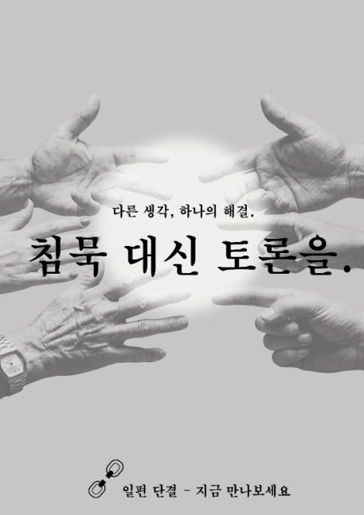
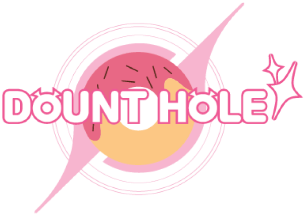
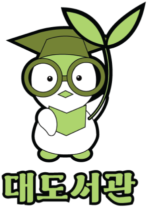

안녕하세요. 사용자의 아이디어를 통해 더 나은 디자인을 만들어내는
웹디자이너 김채령입니다.
생년월일: 2008.03.27
이메일: kimcly08@gmail.com
전화번호: 010-5787-9452
컴퓨터그래픽스운영기능사 - 2026
GTQI 일러스트자격 1급 - 2025
GTQ그래픽기술자격 1급 - 2024
ITQ 정보기술자격 한글 B등급 - 2025
ITQ 정보기술자격 엑셀 B등급 - 2025
2027.01 성보경영 고등학교
2024.02 동광중학교
기간 2026.09.04 — 2026.09.06

기존 삼계탕 브랜드와 차별화할 수 있는 개성 있는 로고를 만드는 데 어려움이 있었으며, 삼계탕이라는 음식의 특징을 어떤 방식으로 표현해야 할지 아이디어가 쉽게 떠오르지 않아 디자인 방향을 잡는 과정에서 고민이 많았습니다.
삼계탕의 핵심 재료인 닭을 중심으로 디자인 방향을 설정했으며, 뜨거운 솥 안에서 보글보글 끓고 있는 닭의 모습을 떠올려 이를 바탕으로 재미있고 개성 있는 로고를 제작했습니다.
솥 안에서 끓고 있는 닭의 모습을 로고로 제작해 삼계탕 브랜드의 정체성을 직관적으로 전달하고, 단순하면서도 개성 있는 디자인을 통해 소비자들이 쉽게 기억할 수 있도록 구성했습니다.
사용된 프로그램 Adobe Illustrator 어도비 일러스트레이터
기간 2026.09.15 — 2026.09.16

기존 다온백의 로고를 새롭게 리메이크하는 과정에서 참고할 만한 자료를 조사하고 브랜드의 특징을 파악하는 데 어려움이 있었습니다.
기존 다온백이 가진 브랜드의 특징은 최대한 살리되, 조금 더 색다르고 차별화된 방향으로 디자인을 진행하고자 했습니다.
기존 다온백의 로고를 새롭게 리메이크하여 부드럽고 감성적인 분위기가 돋보이는 로고를 완성했습니다.
사용된 프로그램 Adobe Illustrator 어도비 일러스트레이터
기간 2026.09.04 — 2026.09.06

일상에서 느끼는 다양한 불편함을 해결하고 사람들의 공감을 이끌어낼 수 있는 브랜드 이미지가 막막했고 이 표현에 대해 정말 많이 고민하고 했습니다.
우리가 흔히 겪는 일상의 불편함을 함께 나누고 해결하는 커뮤니티가 있었음 좋겠다고 생각하여, 그것을 바탕으로 찬찬히 구성 했습니다.
사람들이 서로 소통하고 힘을 모아 일상의 불편함을 해결한다는 의미를 담아 친근하면서도 기억하기 쉬운 로고를 제작했습니다.
사용된 프로그램 Adobe Illustrator 어도비 일러스트레이터
기간 2026.09.06 — 2026.09.08

일상에서 느끼는 사소한 불편함을 공감대의 매개로 삼아 가상의 커뮤니티를 기획했고,
더 많은 사람에게 커뮤니티의 취지와 목적을 전달하고자 홍보용 포스터를 제작하고 이미지로 구현했습니다.
사용된 프로그램 Adobe Photoshop 어도비 포토샵
기간 2026.09.06 — 2026.09.08

온라인 소통에만 머무르지 않고, 사람들이 직접 만나 일상의 불편함에 대해 자유롭게 의견을 나누고 토론할 수 있는 오프라인 중심의 커뮤니티를 기획했습니다.
또한, 다양한 사람들의 의견을 모아 목소리를 내고 이를 대신 전달하고 실현할 수 있도록 돕는 커뮤니티의 취지를 담아 홍보물을 제작했습니다.
사용된 프로그램 Adobe Photoshop 어도비 포토샵
기간 2026.10.28 — 2026.10.30

기존 도넛 로고와 차별화할 수 있는 독창적인 아이디어가 필요했으며, 도넛의 달콤하고 중독성 있는 매력을 어떻게 시각적으로 표현할지 고민했습니다.
도넛을 한입 먹으면 멈출 수 없이 계속 먹게 되는 모습이 마치 이를 모든 것을 빨아들이는 블랙홀에 비유해 재미있는 디자인 콘셉트를 설정했습니다.
도넛과 블랙홀의 이미지를 결합해 독특하고 재미있는 로고를 제작했습니다. 익숙한 도넛에 새로운 상상력을 더해 소비자들의 시선을 끌고, 브랜드만의 개성이 잘 드러나도록 표현했습니다.
사용된 프로그램 Adobe Illustrator 어도비 일러스트레이터
기간 2026.10.29 — 2026.10.31

친환경적인 이미지를 전달하면서도 딱딱하고 어렵게 느껴질 수 있는 도서관의 이미지를 보다 친근하게 표현하는 것이 쉽지않았고 무엇보다 자료 참고하는 것이 제일 힘들었습니다.
환경 보호와 자연을 떠올릴 수 있는 친환경적인 콘셉트를 바탕으로, 아이들에게도 친숙하고 환경에도 관련된 귀여운 동물인 펭귄을 디자인 요소로 선정했습니다.
펭귄과 도서관을 결합해 친환경적이고 친근한 이미지를 표현했으며, 아이들도 쉽게 다가갈 수 있도록 귀엽고 단순하게 디자인했습니다.
사용된 프로그램 Adobe Illustrator 어도비 일러스트레이터